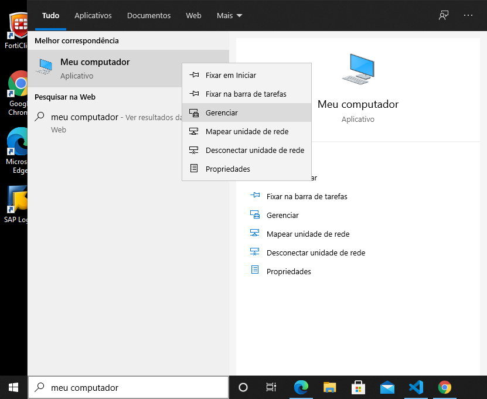

Habilitar Usuário Admin
1. No menu Iniciar do Windows digite: Meu Computador
2. Clique com o botão direito em Meu Computador
3. Em Gerenciamento do Computador no menu à esquerda clique em Usuários e Grupos Locais e depois dê um duplo clique na pasta à direita Usuários
4. Clique com o botão direito em cima de Administrador e após clique em Propriedades
5. Desabilite o checkbox de Conta desativada e clique em OK
6. Novamente clique com o botão direito em cima de Administrador e após clique em Definir Senha
7. Nesta tela clique em Prosseguir

8. Digite a senha Prazer3coracoes@ nas duas caixas e clique em Ok